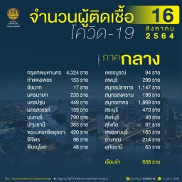
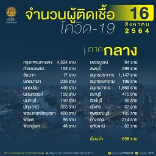

DMHTT
Covid Stats in different regions
Stats on August 16,2021
East and North, Central
 

At a time when Thailand is faced with a tough battle against COVID-19 and new variants, it's more important than ever for health authorities to relay important messages to the Thai and non-Thai population - especially with the two million workers from neighbouring countries including Cambodia, Laos, and Myanmar. Health literacy plays a crucial role in helping to reduce transmission and allows the public to understand how the virus spreads and know how to protect themselves against it. The WHO and implementing partners embarked on a project to translate a guide to COVID-19 vaccines from Thai into English, Khmer, Lao, and Burmese. This comprehensive guide provides details about the virus and its variants as well as vaccines - the key to ending this pandemic.
A heartfelt “thank you” to all those involved in this ambitious yet highly important mission. Please do your part by sharing information about this free guide to your family and circle of friends and together, we will reach the finish line with full knowledge about COVID-19.
Thai, English, Khmer, Lao, and Burmese versions are available for free download.
BANGKOK: Thailand could see coronavirus cases double to 45,000 per day by early next month, even with current lockdown measures in place, its COVID-19 task force said on Friday (Aug 13), as authorities urged people to stay home to reduce infection risks.
Thailand has been struggling with its worst outbreak so far, with a daily average of 20,000 new infections and 180 deaths in the past week, compared to 70 new cases and single-digit daily fatalities less than five months ago.
Current travel restrictions and containment measures in place over the past month have yet to make an impact, the task force said.
A record 23,418 new cases were announced on Friday, taking overall cases to 863,189, with 7,126 deaths.
"The lockdown has been 20 per cent effective but the infections continue to rise, projected to reach about 45,000 cases per day by the start of or mid-September," spokesman Taweesin Wisanuyothin told a news conference.
West and South, Northeast